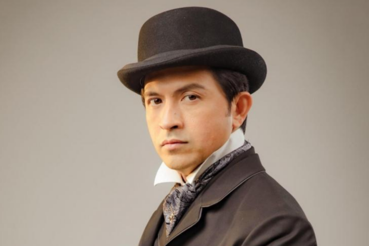
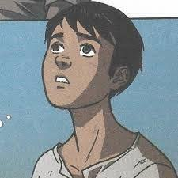

CHARACTERS IN NOLI ME TANGERE
|
| Character |
Name |
Description |
 |
Maria Clara |
She represents the struggles of Filipina women during the Spanish era
She is the fiancee of Ibarra
The real daughter of Padre Damaso |
|  |
Crisostomo Ibarra |
The protagonist of Noli Me Tangere
Studied in Spain for 7 years
He is the sone of Don Rafael |
 |
Padre Damaso |
Former curate in San Diego
The real father of Maria Clara
He is described as a fat, snobbish and narcissist curate |
|  |
Basilio |
The eldest son of Sisa
Experienced child labor and worked as a sacristan
Got shot in the head by a civilian guard |
 |
Crispin |
The youngest son of Sisa
Got falsely accused of stealing money
Experienced child labor along with his older brother |
| |
Sisa |
The mother of Crispin and Basilio
She gets abused by her husband but she won't leave him
Turned crazy while looking for her son Crispin |
 |
Padre Salvi |
He is described to look pale and skinny because he gets sick often
The curate who replaced Padre Damaso in San Diego
He secretly admires and likes Maria Clara |
 |
Pilosopo Tasio |
He was called crazy by those who didn't study,
and he was called smart by those who studied.
He started reading books when his wife died |
 |
Kapitan Tiago |
The step-father of Maria Clara
He wanted to be like an Espanyol and not a Filipino |
 |
Kapitan Tiago |
Friend and a socialite of Kapitan Tiago
Associated with other influencial people to gain status in San Diego |